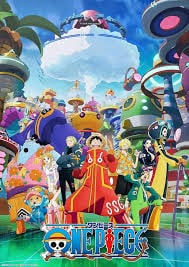

One Piece is the name the world gave to all the treasure gained by the Pirate King Gol D. Roger. At least a portion of it once belonged to Joy Boy during the Void Century. The treasure is said to be of unimaginable value, and is supposedly located on Laugh Tale, the final island of the Grand Line.
The One Piece is the driving goal of Monkey D. Luffy and his crew, as well as many other pirates, all seeking to claim the treasure in order to become the next Pirate King, following Roger's final words at his world-changing execution. At some point during the Void Century, a man called 'Joy Boy' came across an island at the very end of the Grand Line. Here, he left behind a treasure of unimaginable value. However, Dr. Vegapunk theorized that the person who would find it might not be the one Joy Boy initially was hoping for. Stories of this treasure on the final island piqued the interest of Gol D. Roger, and he took the World Government forbidding exploration of the island as evidence of it being real.
Only the members of the Roger Pirates crew that journeyed to the island learned what exactly the treasure consists of. Upon arriving on the island and seeing Joy Boy's treasure, the Roger Pirates simply began to laugh. Roger described it as a "tale full of laughs", which gave him the idea to name the final island "Laugh Tale". Sometime after the Roger Pirates' discovery, the world at large would begin to refer to Roger's treasures as the "One Piece".
Moments before Roger was executed, he announced to the world that this great treasure could be claimed by anyone who could reach it, thereby starting the Great Pirate Era. With the executions of Roger and Kouzuki Oden, and the unknown fates of the majority of Roger's crew, the only known surviving individuals in the present day who are aware of the treasure's true nature are Silvers Rayleigh, Crocus and Scopper Gaban.
The closest the Straw Hat Pirates have ever come to finding out the nature of the One Piece was during the Celestial Dragon Hit-and-Run Incident, when Usopp tried to ask Silvers Rayleigh about it. However, Luffy stopped him on the grounds that learning about it from someone else would defeat the purpose of their adventures and that becoming the Pirate King would have little merit if he already knew anything about the One Piece.
After decades of speculations and doubts due to nobody having reached Laugh Tale in over two decades, the treasure's existence was confirmed by Whitebeard during the Summit War of Marineford with his last breath and reignited the dreams of pirates to claim the treasure for themselves, in an era without Roger or Whitebeard. He mentioned that "a grand battle will engulf the entire world" and "the world will be shaken to its core" when the One Piece is found.
During the Raid on Onigashima, Big Mom had an internal monologue seemingly expressing the idea that "some of" the One Piece might be located in Wano Country. This has yet to be elaborated on further. During a worldwide broadcast happening during the Egghead Incident, Vegapunk also confirmed the existence of the One Piece and stated that whoever claimed it would have the power to decide the fate of the world.
Pirate King: Gol D. Roger
Final Island: Laugh Tale
Main Protagonist: Monkey D. Luffy
Key Characters: Straw Hat Pirates, Silvers Rayleigh, Crocus, Scopper Gaban
Notable Events: Great Pirate Era, Summit War of Marineford, Raid on Onigashima, Egghead Incident